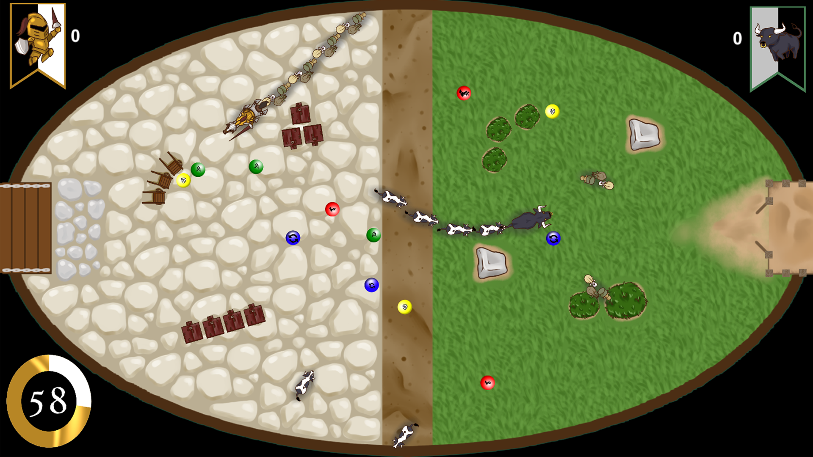
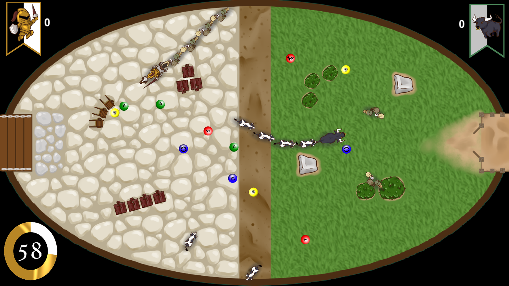

TONY CHEN
TONY CHEN

WAR ON I4
July 8, 2019
Summary
Compete against the bulls to bring back glory for the knights at War On I4
Format
Game Engine: Unity 2D
Team Size: Seven
Development Time: Two days over the course of a Game Jam
Design Goals
To create a game around the theme of "Versus".
Create and design compelling gameplay with replability
Roles and Tasks
Designer: Designed pickup itmes.
Design Implementation
War on I4 is a competitive snake like game where each player must enter enemy teritory to rescue back your comrades and bring them home.
War on I4 is my very first game project and surround by a team of talented designer, I learned quickly and progressed a lot as a designer and programmer. During this project, I learned the basics of Unity and learned how to make animations in Unity. My main focus during this project was to design the power ups and pick ups as well as program them. Though I didn't contribute the most during this project, but this was the stepping stone to my game design career.
Downloads
Current Versions: Itch.io
 
